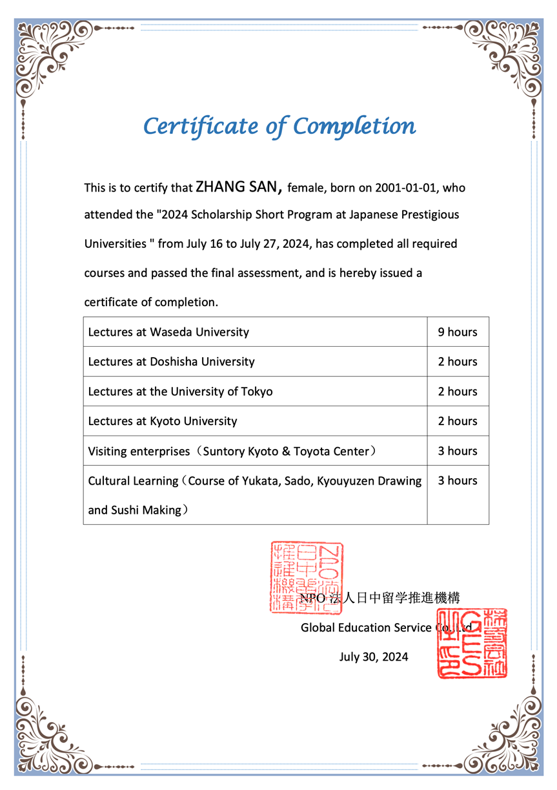

学院通知 · 校园活动
【大川视界】关于选派本科生参加2025年寒假日本东京大学、早稻田大学等日本名校奖学金访学项目（非学分）的通知
发布时间：2024-10-12
根据学校“大川视界”大学生海外访学计划的相关政策，即日起启动2025年寒假日本东京大学、早稻田大学日本名校奖学金访学项目（非学分）的报名工作，项目申请时间： 即日起至 11 月3日。现就有关事项通知如下： 一、项目时间： 2025 年1月14日–1月25日（12天） 二、项目简介 本项目为期12天，包含名校名师讲座、中日学生交流、日本创新企业访问、日本传统文化体验课、小组结业汇报等五个板块，课时共计21个学时。参加项目的同学可全方位了解日本高校教育体系、沉浸式了解日本社会及文化，提升自身的国际化视野以及跨文化思维。 项目详情见附件1：2025年寒假日本东京大学、早稻田大学奖学金访学项目（非学分）介绍。 三、项目收获 项目在日期间，NPO日中留学推进机构主办部门将为每位顺利完成项目的学员颁发结业证书及 5 万日元现金（约人民币2500元/人） 的奖学金。 图：项目证书样图 四、项目费用 项目总费用 约1.76万元人民币/人 费用包括 大学课程费、大学管理费、企业参访费、校园参访交流费、文化体验费、住宿费、境外集体活动大巴使用费、公共交通费、保险费、接送机费以及项目服务费等 费用不包括 护照办理费、签证费、集体活动以外的餐费、国际往返机票费、其它个人消费等 奖学金 5 万日元现金（约2500元人民币/人） 优惠条款：在2024年11月3日前（含11月3日当天）完成学校系统报名的同学，可享受早鸟价1000元人民币/人的减免。 获得优惠及奖学金的同学，最终实际参加费用约为 14,100 人民币/人。 五、项目选派条件： 1. 拥护中国共产党的领导、政治立场坚定、热爱祖国、品德优良、身心健康，遵守国家法律法规、学校规章制度，无纪律处分；具备在日本进行独立学习及生活能力的全日制本科生； 2. 全日制在校本科学生，专业不限； 3. 有良好的英文交流沟通能力，有日语基础者优先； 4. 有相应的经济能力，能承担在日本学习、生活的相关费用。 5. 学生在项目期间需严格遵守当地法律法规、学校及参访场所的规章制度，自觉维护国家利益、民族尊严和学校荣誉。 六、 报名时间及方式 1. 报名时间：即日起至2024年11月3日； 2. 报名方式：填写附件2（“大川视界”非学分项目申请表），经学院审核签字盖章后，将申报单电子档（扫描件） 及相关英语成绩支撑材料发送至xgb-fzzx1@scu.edu.cn ； 3. 校内组织单位审核通过申报材料后，将以邮件通知方式告知。后续，由国际合作与交流处组织报名缴费的相关工作； 4. 为保证出行顺利，请在报名成功后及时告知学院辅导员，并完成“七、出国（境）备案流程”。 七、出国（境）备案流程 四川大学在籍学生在出国或前往港澳台地区交流学习前，必须通过四川大学学生出国（境）网上备案系统办理备案。备案之后，出国、赴港澳、赴台后续办理程序有所不同，请根据不同目的地选择相应程序。未经备案，学校将不予办理财务报销、成绩认证、学分转换、体测免测等相关手续和服务： https://global.scu.edu.cn/?channel/490/504 八、咨询电话： 党委学生工作部 85460907（江安）；85461977（望江）（校内报名咨询） 国际合作与交流处 85404255（项目咨询） 项目组织方李老师 185-5431-1916（同微信）（项目介绍、机票推荐、护照及签证办理指导等） 九、项目宣讲 第一场：10月19日（周六）19:00-20:00 腾讯会议号：765-414-798 第二场：10月26日（周六）20:10-21:10 腾讯会议号：884-588-106 附件1-东京大学、早稻田大学等日本名校访学奖金特别团 附件2-“大川视界”非学分项目申请表
